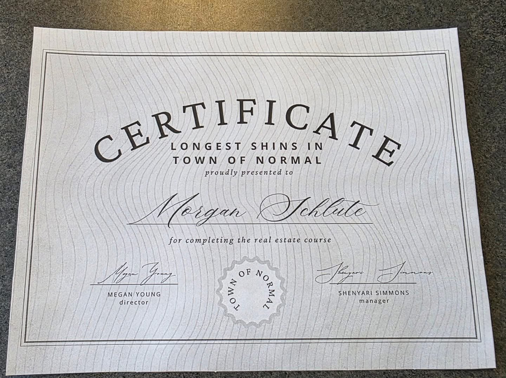

Morgan Schulte
Longest Shin Champion of Normal, Illinois · Frontwoman, Shins of Steel
Morgan Schulte is a locally celebrated figure in Normal, Illinois, best known for holding the ceremonial distinction of "Longest Shins in the Town of Normal." The honor was awarded during an official municipal recognition ceremony in which town officials, multiple measurement instruments, a step ladder, and at least one intern experiencing a vocational crisis all confirmed that Schulte possessed the longest documented shins within town limits.
Following the release of a stage portrait in which Schulte appeared not as a person receiving an absurd certificate but as a leather-jacketed rock frontwoman about to destroy an amphitheater, the internet quickly identified the image as having unmistakable album-cover energy. This led to the creation of the fictional debut album Shins of Steel and the wider mythology surrounding Schulte as Normal's foremost lower-leg legend.
Overview
Public awareness of Schulte's exceptional shin proportions predates the ceremony by some years. Former acquaintances have recalled that even during routine walking activities, Schulte's stride appeared to cover distances that were, in the words of one observer, "statistically concerning." A single stride was reported to be capable of spanning an entire standard parking lot with minimal additional effort.
Local analysts have noted that Schulte's shins effectively arrive at a destination approximately thirty seconds before the rest of Schulte does, creating what observers describe as "a kind of advance shin delegation." No scientific consensus has been reached on whether this constitutes an asset or a scheduling complication.
Shin Recognition Ceremony
The measurement event was conducted by Town of Normal staff under what officials described as "rigorous and scientific" conditions. The process reportedly involved the following instruments:
- Standard tape measures (multiple)
- Two yardsticks, deployed sequentially
- A step ladder borrowed from facilities management
- One intern who reportedly whispered, "that can't be right," and was reassigned
After several rounds of verification, officials confirmed the findings. Town Director Megan Young stated that in her years of municipal service she had never encountered tibia-to-fibula ratios of this magnitude. Manager Shenyari Simmons noted, separately, that the certificate template had to be extended twice.
A commemorative certificate was issued. Schulte was seen leaving the ceremony in what witnesses described as "the longest pair of jeans anyone has ever seen."

Shins of Steel
The fictional debut album Shins of Steel emerged organically from the widespread consensus that Schulte's stage portrait resembled a hard-rock album cover more than a municipal photograph. Music critics — all imaginary — praised the image for its "dramatic lower-body implications."
| Released | Immediately after the certificate was framed |
|---|---|
| Genre | Municipal heavy metal · Tibia rock · Normal-core |
| Label | Town of Normal Department of Shin Affairs |
| Producer | The Intern (uncredited) |
| Length | As long as Morgan's shins, which is very long |
Track listing
| # | Title | Length |
|---|---|---|
| 1 | Tibia Rising | 4:32 |
| 2 | Stride of Destiny | 5:11 |
| 3 | March of the Long Shins | 6:04 |
| 4 | The Normal Rebellion | 3:58 |
| 5 | Pants That Couldn't Contain Them | 7:22 |
| 6 | Measured by the State | 4:45 |
| 7 | Shin Lightning | 5:09 |
| 8 | Walk Tall (reprise) | 8:00 |
| Total length: | Very, very long | |
Critical reception
"An unprecedented achievement in lower-limb rock music. Schulte's shins arrive on the opening track approximately thirty seconds before the guitars do, and honestly, they set the tone perfectly."
— Normal Tibia Times, fictional publication, 2026
"I have reviewed hundreds of albums. I have never reviewed an album about shins. I will not review another. This one, however, deserves a 10/10."
— Pitchfork (Parody Edition), 2026
Press coverage
Normal, IL — In what city officials are calling "a historic moment for lower-leg achievement," Schulte was formally awarded the prestigious certificate. The ceremony drew dozens of curious onlookers and at least one confused orthopedic specialist.
One passerby commented: "Honestly, you see them coming down the sidewalk about 30 seconds before the rest of Morgan arrives."
The Town of Normal has since announced plans to celebrate the achievement annually with a civic event provisionally titled ShinFest, which will include:
- Competitive shin measuring
- Long-stride walking races
- A ceremonial lowering of the municipal tape measure
- A moment of silence for the intern
"His shins arrive 10 minutes before the rest of him."— local observer
"Each shin may qualify for its own property tax district."— tax attorney (probably)
"Those shins have their own ZIP code."— USPS, allegedly
Athletic profile (Unofficial)
The following statistics were compiled by the Town of Normal Department of Shin Affairs. They have not been verified by any actual athletic body. They do not need to be.
| Attribute | Rating | Notes |
|---|---|---|
| Shin length | Certified by certificate | |
| Stride efficiency | 3 steps per mile | |
| Tibia-to-fibula ratio | Impressive; see attached ruler | |
| Pants compatibility | Inseam: custom order only | |
| Wind resistance | Estimated; no wind tunnel data | |
| Stage presence | Rock album cover confirmed | |
| Municipal fame | And growing | |
| Ceiling clearance required | Duck under low doorframes |
Scouting report
- Elite stride length
- Exceptional shin endurance
- Outstanding calf-to-ankle transition
- Advance shin delegation capability
- Must duck under low ceilings
- Frequently mistaken for a walking yardstick
- Causes confusion in parking lots
Signature move: The Extended Stride — observers report Schulte can cross an entire parking lot in four steps and a shrug.
Legacy
Though the distinction is not recognized by any national athletic federation, Olympic body, or institution with even a minimal commitment to seriousness, Morgan Schulte remains the undisputed holder of the "Longest Shins in the Town of Normal" title.
The achievement has become embedded in Normal's lighthearted folklore. Local analysts agree that any future challenger would need to present extraordinary lower-leg proportions — and a certificate, signed by a director, to even enter the conversation.
The combined legacy of the certificate, the stage portrait, and the fictional Shins of Steel has elevated Schulte to what cultural historians are calling "a kind of minor patron saint of unusually long bones." No cultural historians were actually consulted.
See also
- Municipal heavy metal (genre)
- Advanced stride mechanics
- Illinois parody awards
- The Town of Normal (general article)
- Competitive shin measurement
- ShinFest (proposed annual event)
- The intern (disambiguation)
References
- Town of Normal, Department of Shin Affairs. Certificate of Longest Shins. Original document, framed.
- Young, M. (Director, Town of Normal). Personal communication regarding tibia-to-fibula ratios. Undated.
- Simmons, S. (Manager). Statement regarding certificate template extension. Internal memo.
- Normal Tibia Times. "Shins of Steel: A Review." Fictional publication, 2026.
- The Intern. Unpublished remarks, measurement ceremony. Redacted.
- USPS. Inquiry regarding ZIP code application for individual shins. Pending.